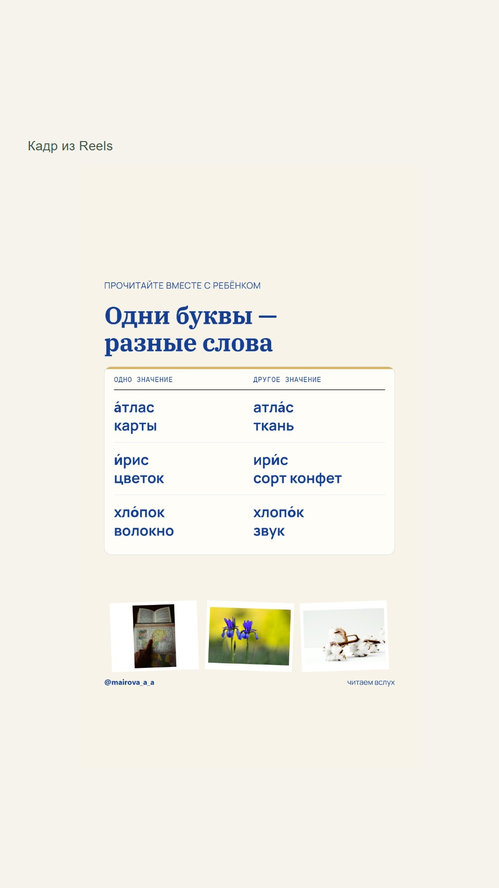

Одни буквы —
разные слова
Первый выпуск в новой подаче: фотографии, светлая бумага и синие заголовки. Карусель и Reels — две версии одного материала; для публикации выбирается одна.
Локальные готовые файлы. Публикация не выполнена, дата выпуска не назначена.
Прочитайте вместе с ребёнком
Три пары, короткое задание и ответы. Нажмите на карточку, чтобы открыть её целиком. Для каждого слайда есть видео со звуком длительностью 6 секунд.


Те же примеры — в движении
Пары появляются по очереди. Полная таблица остаётся в конце для чтения и служит обложкой.
Carefree — Kevin MacLeod (incompetech.com). CC BY 4.0 — https://creativecommons.org/licenses/by/4.0/. Фрагмент обрезан и сведён с видео.
Подпись
Карточки для Stories
Полные изображения без обрезки: шесть слайдов карусели и финальная памятка Reels. Экспорт JPG, 1080 × 1920. Эти файлы не содержат звука.
Все слайды карусели


Финальная памятка Reels

{kind=link}
Готовый текст и проверка
Скачать обе подписи с музыкальными кредитами
Карусель
Словари · проверено 12 сентября
Редакторская сверка · Подробная проверка фактов
Фотографии
- Два синих цветка ириса — Erzsébet Vehofsics. Unsplash License.
- Коробочки хлопчатника с белым волокном — Marianne Krohn. Unsplash License.
- Складки светлой атласной ткани — Lampos Aritonang. Unsplash License.
- Открытая книга с географической картой — Arturo Añez.. Pexels License.
Музыка
- Карусель: Carefree — Kevin MacLeod (incompetech.com). CC BY 4.0 — https://creativecommons.org/licenses/by/4.0/. Фрагмент обрезан и сведён с видео. Страница автора.
- Reels: Carefree — Kevin MacLeod (incompetech.com). CC BY 4.0 — https://creativecommons.org/licenses/by/4.0/. Фрагмент обрезан и сведён с видео. Страница автора.
Фото используются как предметные иллюстрации. Музыка взята из проверенной библиотеки проекта; трендовость и доступность в музыкальном каталоге Instagram не заявляются.